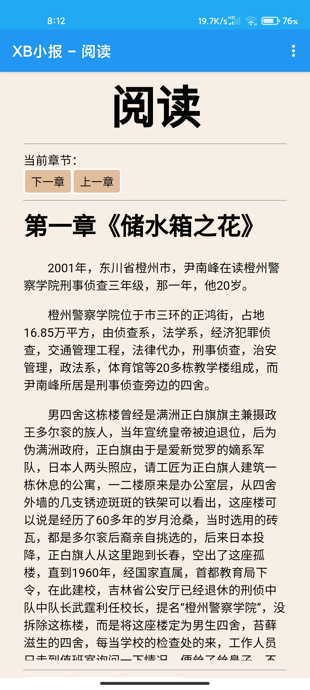
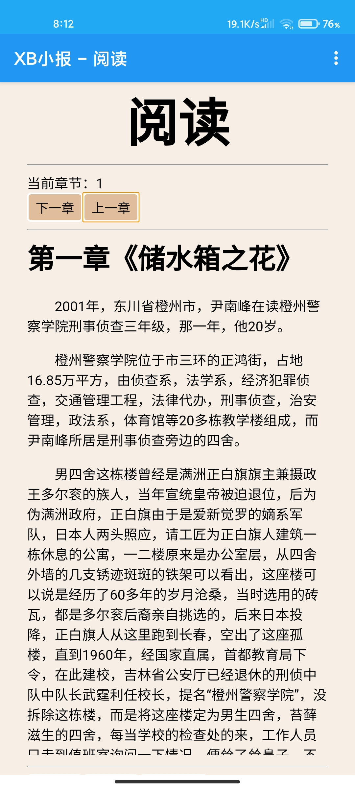

很好！你切换到了第二章！<br>
你注意到了吗？刚进入时章节没有显示，默认加载第一章（如下图）。<br>

切换章节后，即可正常显示~<br>

退出时，按下返回键，小说会随着返回键而进行返回，但是系统会保留你上一次切换章节时切换到的章节，他们将在你下次进入小说时进行加载。<br>
如果是第一章，那么你按上一章按钮时，系统会弹出提示。<br>
由于ZH现在还没有写关于最后一章的代码（等到有时间一定补齐），所以如果你翻页时看到404即是最后一章了。<br>
现在，请按下一章按钮继续......